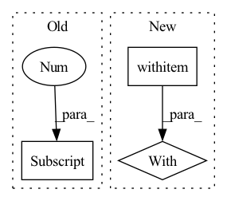

Pattern ID :2608
Before Change
if self.version == "B0":
if self.training:
var = x.var([0,2,3])
self.running_var = (self.momentum * self.running_var) + (1.0-self.momentum) * (x.shape[0]/(x.shape[0] -1)*var)
else:
var = self.running_var
sigma = var.view([1, self.insize, 1, 1]).expand_as(x)
After Change
if self.training:
var = x.var([0, 2, 3], unbiased=False)
n = x.numel() / x.size(1)
with torch .no_grad():
self.running_var = exponential_average_factor * var * n / (n - 1)\
+ (1 - exponential_average_factor) * self.running_var
else:
var = self.running_var
In pattern: SUPERPATTERN
Frequency: 3
Non-data size: 3
Instances Fragment ID: 8462435
Project Name: digantamisra98/evonorm
Commit Name: e64df8c7cc70ac2bb49fc1ec7d479cd1a07ebbef
Time: 2020-04-08
Author: mishradiganta91@gmail.com
File Name: evonorm2d.py
M Class Name: EvoNorm2D
N Class Name: EvoNorm2D
M Method Name: forward(2)
N Method Name: forward(2)
M Parent Class: nn.Module
N Parent Class: nn.Module
M File Name: evonorm2d.py
N File Name: evonorm2d.py
M Start Line: 51
M End Line: 57
N Start Line: 42
N End Line: 60
Before Change
X_ = self.gcn(new_g, h, edge_weight=edge_weight)
X_ = F.relu(X_)
else:
edge_index, edge_weight = H[i][0] , H[i][1]
X_ = th.cat((X_, F.relu(self.gcn(new_g, h, edge_weight=edge_weight))),
dim=1)
X_ = self.linear1(X_)After Change
return deg_inv_sqrt[row], deg_inv_sqrt[col]
def forward(self, g_homo):
with g_homo .local_scope():
//Ws = []
// * =============== Extract edges in original graph ================
A = extract_edge_with_id_edge(g_homo)
// * =============== Get new graph structure ================
for i in range(self.num_layers):
if i == 0: Fragment ID: 8462437
Project Name: bupt-gamma/openhgnn
Commit Name: 51823d529be6db0eb8844c1c0f417b267644c197
Time: 2021-03-01
Author: theheavenszhao@outlook.com
File Name: openhgnn/model/GTN_sparse.py
M Class Name: GTN
N Class Name: GTN
M Method Name: forward(2)
N Method Name: forward(2)
M Parent Class: nn.Module
N Parent Class: nn.Module
M File Name: openhgnn/model/GTN_sparse.py
N File Name: openhgnn/model/GTN_sparse.py
M Start Line: 67
M End Line: 89
N Start Line: 66
N End Line: 96
Before Change
:type inverse: bool, optional
if train:
self._parallel_variance(torch.mean(x, dim=0), torch.var(x, dim=0), x.shape[0] )
// scale back the data to the original representation
if inverse:After Change
:type no_grad: bool, optional
if no_grad:
with torch .no_grad():
return self._compute(x, train, inverse)
else:
return self._compute(x, train, inverse) Fragment ID: 8462436
Project Name: toni-sm/skrl
Commit Name: 3ff78a027e492182b7e8d539ce2233a89cdf9bc0
Time: 2022-07-08
Author: toni.semu@gmail.com
File Name: skrl/resources/preprocessors/torch/running_standard_scaler.py
M Class Name: RunningStandardScaler
N Class Name: RunningStandardScaler
M Method Name: forward(5)
N Method Name: forward(4)
M Parent Class: nn.Module
N Parent Class: nn.Module
M File Name: skrl/resources/preprocessors/torch/running_standard_scaler.py
N File Name: skrl/resources/preprocessors/torch/running_standard_scaler.py
M Start Line: 122
M End Line: 132
N Start Line: 115
N End Line: 150